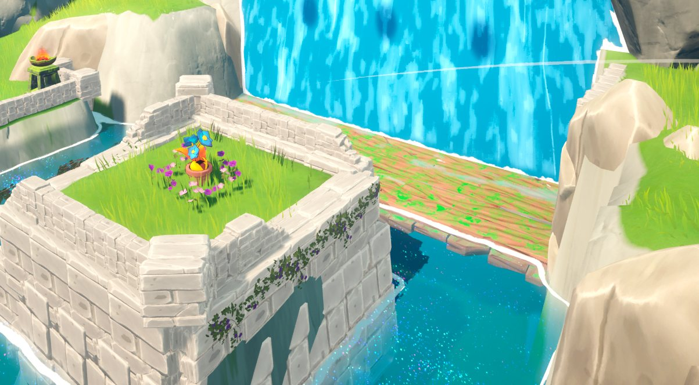

Back to work
Puzzle-Adventure / Unreal Engine 5
Lyra
2025 - 2026
Lyra is a 3D wholesome puzzle-adventure about two baby dragons, built in Unreal Engine 5.
I worked as Game and Level Designer, designing every mechanic and validating the level guidance with real player data. It won Best Thesis at ENTI DemoDay 2026.
Task Overview
- Designed and documented every mechanic through a Pattern-Based Dictionary.
- Built three thematic levels structured around EDPV learning curves.
- Instrumented C++ telemetry in Unreal Engine 5, exporting structured CSV data.
- Ran a full A/B test and statistical analysis in Python.
My Contributions
Lyra was my thesis project, so I owned the mechanics, the levels, and the proof that both actually worked. The through line was refusing to trust my own intuition without data behind it.
- Pattern-Based Dictionary Broke every mechanic into atomic interactions (fire shot, water shot, dragon throw) and catalogued the patterns they form when combined, so each room taught a specific combination rather than an isolated trick.
- EDPV level structure Applied the Exposure, Demonstration, Practice, Validation model across three thematic zones, ordering difficulty and emotional pacing deliberately instead of by feel.
- C++ telemetry pipeline Instrumented Unreal Engine 5 to capture player position and actions as structured CSV, giving me real behaviour data instead of anecdotes.
- Controlled A/B test Designed the full experiment for Puzzle 6: stratified random assignment, inclusion criteria, moderator script and informed consent, comparing the original layout against a redesign with clearer visual guidance.
- Statistical analysis in Python Ran Shapiro-Wilk, Student's t-test and Cohen's d, and reported a non-significant p-value alongside a large effect size rather than only the result that supported my hypothesis.
- Measured outcome The redesign cut navigation errors by 35% and improved resolution time by 33%, measured through the same telemetry pipeline.
0%reduction in navigation errors
0Cohen's d (effect size)
0thematic levels designed
0people on the team
What I learned
The most valuable part was not confirming my hypothesis. It was learning to separate what feels better from what is demonstrably better, and to communicate that grey area to a design team without inflating it or dismissing it.